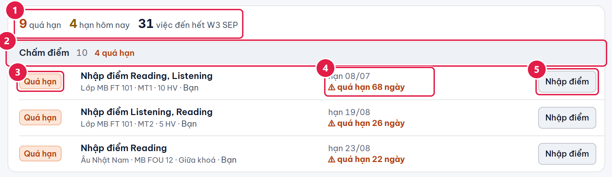
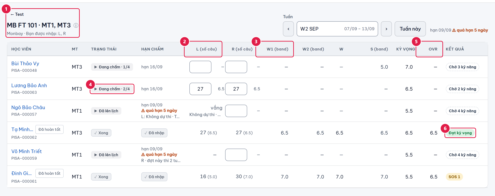
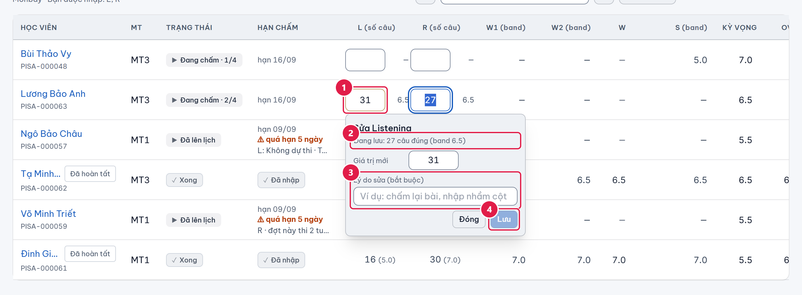
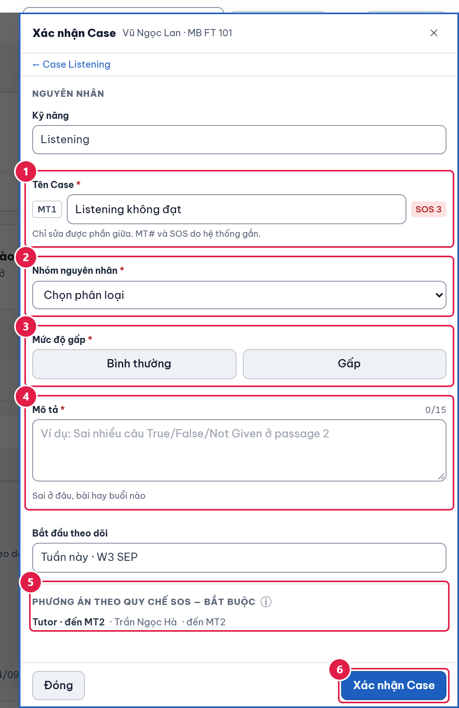
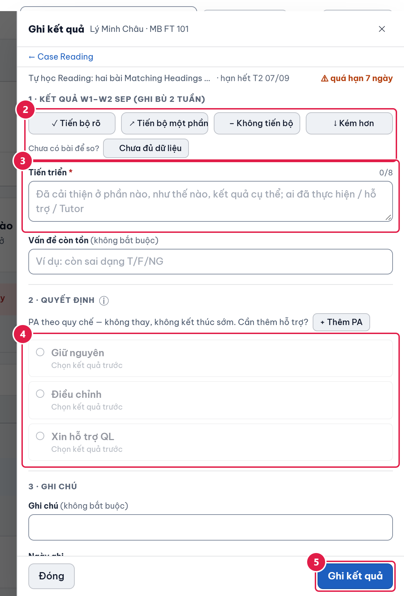
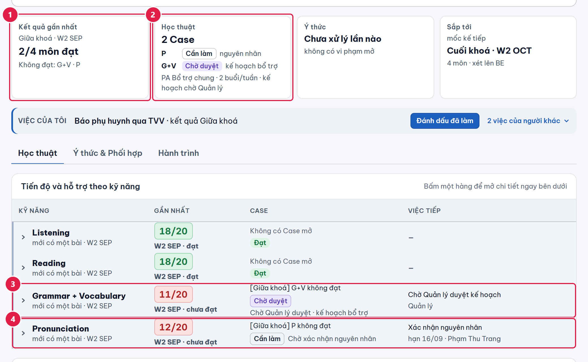
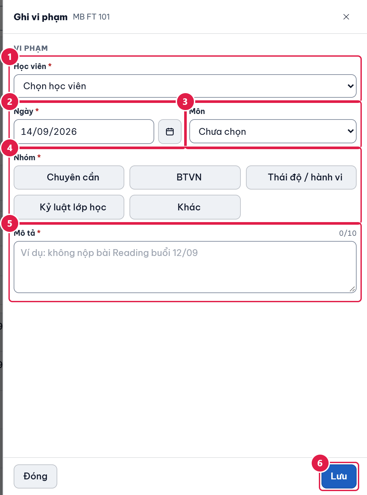
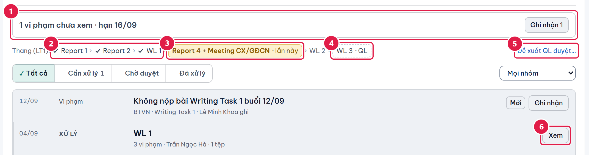
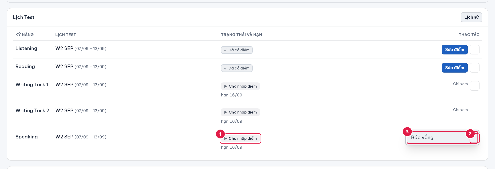

Những việc bạn làm hằng tuần và những hạn không được trễ. Bản đầy đủ có thêm từng màn hình và ví dụ.
Bản 02/10/2026 · Giáo viên chủ nhiệm (GVCN) và giáo viên bộ môn (GVBM) Ảnh chụp từ bản demo; tên và dữ liệu trong ảnh là giả.
1. Nhớ ba điều
Luật cần nhớ
Tuần chạy Thứ Hai → Chủ nhật; W3 SEP là tuần 3 của tháng 9. Mọi hạn "n ngày" là ngày lịch, tính cả ngày đầu.
Bạn chỉ nhập điểm, xử lý Case và PA cho kỹ năng bạn được phân công. GVCN cũng vậy. Chỉ ghi vi phạm thì mọi giáo viên trong lớp làm được.
Giáo viên không bao giờ duyệt. Việc cần Quản lý quyết (QL) thì bạn gửi, rồi xem ở Công việc › Yêu cầu của tôi.
Hạn cần nhớ
Việc
Hạn
Chấm Fast Track
Hết Thứ Tư tuần kế tiếp tuần thi
Chấm lớp thường
Hết Chủ nhật của tuần thi
Sửa dấu "-" (Fast Track)
Hết Chủ nhật; sáng Thứ Hai web chốt
Xác nhận nguyên nhân SOS và xác nhận PA
3 ngày kể từ ngày Case ra đời
Ghi kết quả PA hằng tuần
Hết Thứ Hai tuần kế
Xử lý vi phạm (GVCN)
5 ngày
Bàn giao khi chuyển lớp
GVBM 2 ngày · GVCN 3 ngày
2. Mỗi ngày bắt đầu ở "Việc hôm nay"

Việc của tôi · hôm nay
1Dòng tóm tắt: số việc quá hạn, hạn hôm nay và việc đến hết tuần này.
3Nhãn "Quá hạn" là việc đã trễ; "Cần làm" là việc còn trong hạn.
5Bấm nút cuối dòng (ở đây là "Nhập điểm") để làm việc đó ngay.
Làm theo thứ tự quá hạn → hạn hôm nay → còn lại trong tuần. Bấm nút cuối dòng là mở đúng chỗ cần làm. Số đỏ cạnh Công việc trên thanh trên là số việc quá hạn của bạn.
3. Nhập điểm Test

Lưới nhập điểm Fast Track (MB FT 101)
2Cột L và R: gõ số câu đúng, máy tự đổi ra band (số nhỏ trong ngoặc).
3Cột W1, W2, S: điểm band do giáo viên đúng kỹ năng nhập; kỹ năng không phải của bạn chỉ để xem.
5Cột OVR (Overall): máy tự tính khi đủ điểm.
Fast Track: cột L, R gõ số câu đúng (web tự đổi ra band). W1, W2, S là band, bấm ô để nhập bốn tiêu chí. Overall tự tính. Ô trống là chưa chấm, không phải 0.
Lớp thường: nhập điểm đạt và điểm tổng của từng môn. Đạt khi từ 70 %, không làm tròn trước khi so. FOU gồm L · R · G+V · P; Pre FOU chỉ một ô Tổng hợp.
Em không làm bài: gõ "-" vào ô. Fast Track: sửa được đến hết Chủ nhật; còn "-" thì thành Không dự thi, lần đầu web tự dời sang tuần kế, lần hai chờ Quản lý. Lớp thường: môn dời sang tuần sau.

Hộp "Sửa" điểm đã nhập (bắt buộc ghi lý do)
1Ô đã có điểm: gõ số mới rồi rời ô, web mở hộp hỏi lý do.
2Dòng "Đang lưu" cho thấy điểm cũ để bạn đối chiếu.
3Ô "Lý do sửa": bắt buộc, từ 5 ký tự; chưa đủ thì nút Lưu mờ.
4Bấm "Lưu" để ghi điểm mới; "Đóng" để bỏ, điểm cũ giữ nguyên.
Sửa điểm đã nhập: gõ số mới rồi rời ô; web hỏi lý do (từ 5 ký tự). Sau khi đợt hoàn tất, GVBM không sửa nữa, chỉ Quản lý. Dời lịch thi Fast Track, bỏ kỹ năng, xếp lịch Mock Test cũng là việc của Quản lý.
4. Khi có SOS: Case và PA
Fast Track: em dưới kỳ vọng ở kỹ năng nào thì web tự tạo Case kèm phương án (PA) theo quy chế ở trạng thái Chờ xác nhận. GVBM đúng kỹ năng có 3 ngày chọn một trong hai:

Panel "Xác nhận Case" (Case SOS chờ xác nhận nguyên nhân)
2Ô "Nhóm nguyên nhân": bấm để chọn phân loại nguyên nhân của em (bắt buộc).
6Bấm "Xác nhận Case" để xác nhận nguyên nhân và bắt đầu theo dõi.
Xác nhận Case (chọn nhóm nguyên nhân, ghi mô tả từ 15 ký tự), rồi Xác nhận PA. PA quy chế không tự chạy, không xoá, không thay; chỉ đổi được người thực hiện.
Không cần theo dõi: không đóng ngay mà gửi Quản lý duyệt trong 5 ngày. Bị từ chối thì bạn có hạn 3 ngày mới.
Tự tạo Case bằng tay thì Bình thường có 5 ngày, Gấp 3 ngày để có PA. Thêm PA ngoài danh mục thì gửi Quản lý duyệt.

Panel "Ghi kết quả" của phương án (PA) hằng tuần
1Nhãn hạn của PA: "hạn hết T2 07/09" và "quá hạn 7 ngày" cho biết đã trễ bao lâu; tiêu đề bước 1 bên dưới nói ghi kết quả cho tuần nào.
2Chọn một kết quả: "Tiến bộ rõ", "Tiến bộ một phần", "Không tiến bộ" hoặc "Kém hơn"; chưa có bài để so thì bấm "Chưa đủ dữ liệu".
3Ô "Tiến triển": mô tả đã cải thiện ở đâu, cần ít nhất 8 ký tự.
4Bước 2 "Quyết định": "Giữ nguyên", "Điều chỉnh" hoặc "Xin hỗ trợ QL" (chỉ chọn được sau khi đã chọn kết quả).
5Bấm "Ghi kết quả" để lưu.
Luật cần nhớ
Ghi kết quả PA hằng tuần, hạn hết Thứ Hai tuần kế. Chọn một trong bốn mức (hoặc "Chưa đủ dữ liệu") và một quyết định: Giữ nguyên · Điều chỉnh · Xin hỗ trợ QL. Xin hỗ trợ không dừng PA.
Khi PA chạm mốc quy chế (1 tháng, đến Mock Test kế, đến lúc thi), form đổi thành Ghi kết quả cuối; chỉ sau đó mới Hoàn thành Case được.
5. Lớp thường: Giữa khoá và Cuối khoá

Hồ sơ học viên lớp thường sau Giữa khoá: không đạt G+V và P
2Ô "Học thuật": mỗi môn không đạt có một Case riêng; G+V "Chờ duyệt" kế hoạch bổ trợ, P "Cần làm"; dòng dưới là PA Bổ trợ chung.
3Hàng Grammar + Vocabulary: điểm 11/20 "chưa đạt", Case "[Giữa khoá] G+V không đạt" (không có chữ SOS) và việc tiếp "Chờ Quản lý duyệt kế hoạch".
Giữa khoá (FOU, BE, ELE; Pre FOU không có): môn dưới 70 % tự sinh Case "[Giữa khoá] {môn} không đạt" và PA bổ trợ bắt buộc. Lớp thường không có chữ SOS. Người dạy bổ trợ nộp kế hoạch bài giảng (mỗi ô từ 15 ký tự), Quản lý duyệt trong 3 ngày.
Cuối khoá: web tính % tổng và hiện hướng gợi ý (< 50 · 50–59 · 60–69 · ≥ 70). Quyết định chuyển lớp là của Quản lý. Em lên lớp kèm bổ trợ miễn phí làm Mini Test một lần; từ 70 % thì Case tự hoàn thành.
GVCN báo phụ huynh qua TVV khi có môn trượt.
6. Ý thức

Panel "Ghi vi phạm" (mở từ hồ sơ lớp)
1Học viên: bấm để chọn em bị ghi vi phạm (ô này chỉ có khi ghi từ hồ sơ lớp; ghi từ hồ sơ một em thì em đã được chọn sẵn).
4Nhóm: bấm chọn một trong 5 nhóm: Chuyên cần, BTVN, Thái độ / hành vi, Kỷ luật lớp học, Khác.
5Mô tả: viết rõ chuyện gì đã xảy ra (ít nhất 10 ký tự, có bộ đếm ở góc phải).
Ghi vi phạm: mọi giáo viên trong lớp. Bắt buộc học viên, ngày, nhóm (5 nhóm) và mô tả. Ghi sai thì sửa hoặc xoá thẳng.

Thang xử lý một dòng của Nguyễn Minh An
1Thanh việc: một câu cho biết việc cần làm kế tiếp với em này, kèm nút hành động bên phải ("Ghi nhận 1").
3"Report 4 + Meeting CX/GĐCN · lần này": bậc kế tiếp sẽ dùng cho lần xử lý sau.
5Đề xuất QL duyệt…: bấm để đề xuất việc nặng hơn thang (WL 3, Meeting CX/GĐCN, Đình chỉ học tạm thời…).
Luật cần nhớ (GVCN lớp em đang học)
Thang 6 bậc, bắt buộc theo thứ tự: Report 1 → Report 2 → WL 1 → Report 4 + Meeting CX/GĐCN → WL 2 → WL 3. Mỗi lần Xác nhận xử lý, web tự điền bậc kế tiếp; bậc không lùi. Bậc 1–5 bạn tự làm (mô tả từ 10 ký tự).
Từ 3 vi phạm trong tuần này và tuần trước thì bắt buộc xử lý. Quá 5 ngày là Quá hạn, Quản lý nhận thẻ Báo QL.
WL 3, Đình chỉ học tạm thời, Meeting CX/GĐCN đứng riêng và Khác cần Quản lý duyệt: bấm Đề xuất QL duyệt…, đính bằng chứng; được duyệt thì bạn có 5 ngày bấm Đã thực hiện.
7. Việc riêng của GVCN

Hồ sơ Mock: menu ⋯ của từng kỹ năng có mục "Báo vắng"
1Kỹ năng đang "Chờ nhập điểm" (chưa có điểm) mới báo vắng được.
2Bấm ⋯ ("Thao tác khác · Speaking") ở dòng kỹ năng để mở menu.
3Bấm "Báo vắng" để mở hộp ghi lý do em vắng phần thi này.
Thêm học viên (lớp mình chủ nhiệm): dán bảng có dòng tiêu đề "Họ và tên"; email bắt buộc; dòng lỗi ở lại để sửa, không khoá cả lô.
Báo vắng một kỹ năng qua menu ⋯ (lý do từ 5 ký tự); Quản lý xếp lại bài.
Chuyển lớp: bạn không tự chuyển. Bấm Đề xuất chuyển lớp kèm lý do (từ 15 ký tự), Quản lý ra lệnh; lệnh tự chạy sáng Thứ Hai.
Bàn giao khi em chuyển lớp: GVBM ghi một câu cho mỗi em trong 2 ngày; GVCN viết nhận xét chung (từ 15 ký tự) và xác nhận trong 3 ngày. Quá hạn thì báo Quản lý nhưng lệnh vẫn chạy.
Đổi Target hoặc lộ trình: chỉ Quản lý sửa; bạn bấm Đề xuất sửa kèm lý do. Họ tên, ngày sinh, email, tuần bắt đầu thì tự sửa được.
8. Hỏi nhanh
Tình huống
Cách xử lý
Ô điểm chỉ xem, không nhập được
Bạn chưa được phân công kỹ năng đó ở lớp này. Báo Quản lý.
Ô hiện "vắng"
Nhờ Quản lý xếp lại bài vắng hoặc khôi phục.
Gõ "-" bị chặn ở lớp thường
Dời vướng đợt kế; nhờ Quản lý dời lịch ở Kế hoạch Test.
Không bấm được Hoàn thành Case
PA quy chế chưa tới mốc. Đợi mốc rồi Ghi kết quả cuối.
Không sửa được điểm
Đợt đã hoàn tất. Nhờ Quản lý.
Vi phạm đã Quá hạn
Vào hồ sơ em, bấm Xác nhận xử lý; xử lý xong thẻ Báo QL tự đóng.